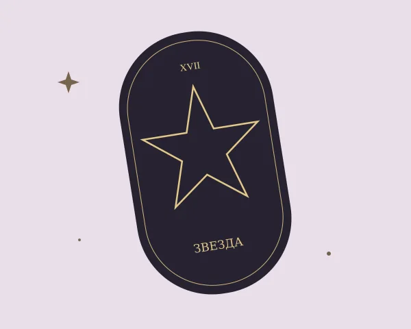
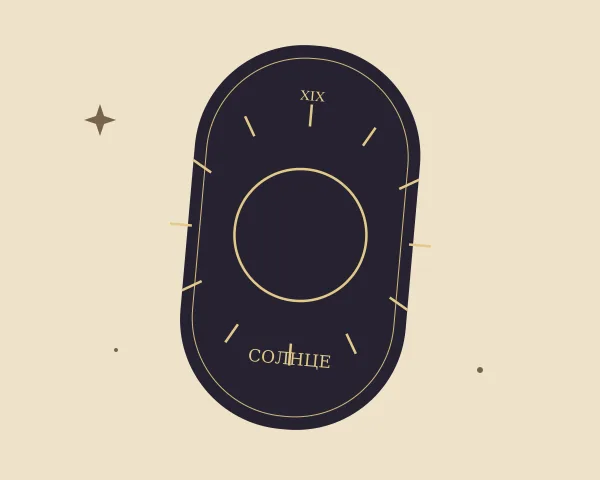
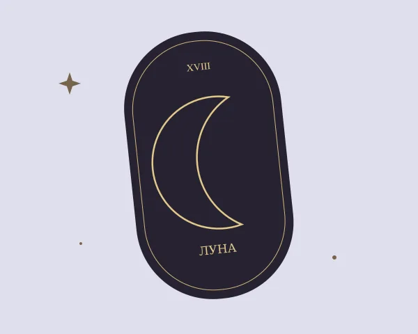

3 карты · 15 минут
Один вопрос
Бережный взгляд на один конкретный вопрос. Подойдёт для первого знакомства с форматом.
790 ₽
Каталог
От одного вопроса до большой картины. Выберите тему, которая сейчас важна для вас.
Найдено раскладов: 6

3 карты · 15 минут
Бережный взгляд на один конкретный вопрос. Подойдёт для первого знакомства с форматом.

7 карт · 30 минут
Ваши ожидания границы и общение. Посмотрите на отношения с новой стороны.

5 карт · 25 минут
Два варианта ваши сомнения и ресурсы. Пространство для осознанного выбора.

9 карт · 40 минут
Вопросы работы творчества и личных приоритетов. Исследуйте то что для вас важно.

10 карт · 45 минут
Темы ближайшего месяца как повод для рефлексии: отношения занятия и забота о себе.

12 карт · 60 минут
Развёрнутая сессия вокруг вашего запроса с временем на уточняющие вопросы.
| Расклад | Карты | Сессия | Цена |
|---|---|---|---|
| Один вопрос | 3 карты | 15 минут | 790 ₽ |
| Об отношениях | 7 карт | 30 минут | 1490 ₽ |
| На перекрёстке | 5 карт | 25 минут | 1290 ₽ |
| Дело по душе | 9 карт | 40 минут | 1790 ₽ |
| Мой месяц | 10 карт | 45 минут | 1990 ₽ |
| Большая картина | 12 карт | 60 минут | 2990 ₽ |